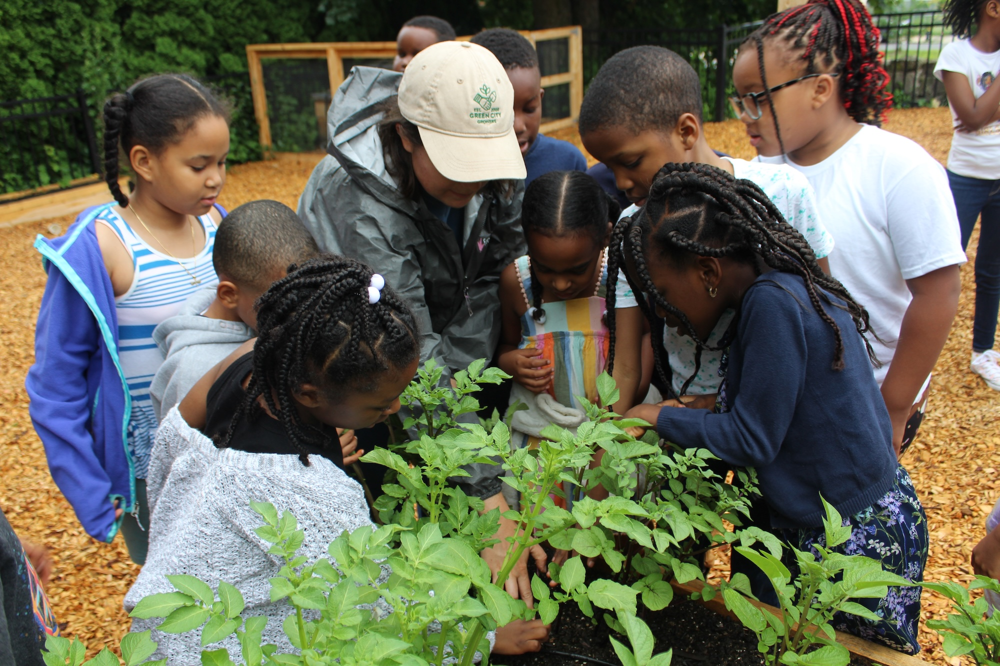

An introductory program designed for schools and early education programs that would like to build an integrated farm to school program.
This program will help participants identify individuals across their school-wide community to support local foods sourcing and education efforts. Participants will finish the year well positioned to attend the Mass Farm to School Institute in the next school year.
Monthly meetings as a cohort with a MFTS mentor
Dedicated program website with curated resources
Opportunity and invitations for professional learning throughout the year
Guest speakers on building an inclusive farm to school team
Individualized coaching for your FTS Institute application
Supportive cohort for peer learning and sharing

A quote from a SEEDs participant goes here, in the voice of a school or early education team that used the program to build their farm to school group.Name, Role — School or Program
SEEDs is the starting point for schools and early education programs that aren't yet ready for the Institute.